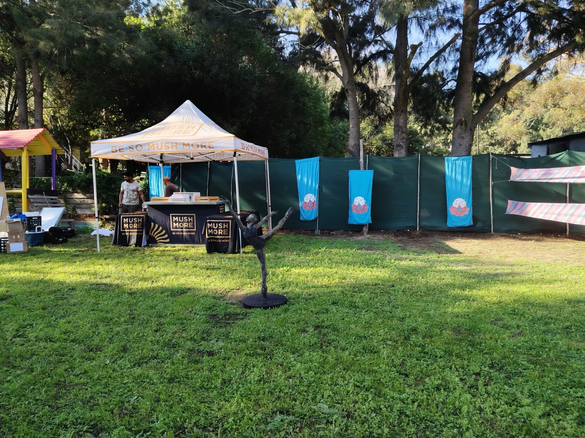

01HEART
Heart
Love in a Bowl, Hout Bay · complete
Heart opened the journey through warmth, community, conversation and place.
The first gathering took place at Love in a Bowl in Hout Bay: a living community space rooted in food, care, learning and local connection. It was a family-friendly day that brought people together gently and reminded us that Earthdance is not only about the final festival weekend. It is also about the relationships that make that weekend meaningful.
Heart gave the year its emotional grounding. It was a real meeting point between communities — and it set the tone for everything that follows: Earthdance grows through relationship, not only promotion.
